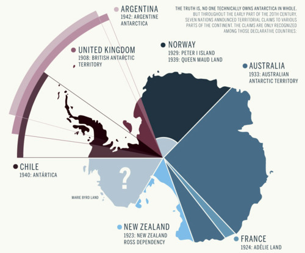

Sat, 27 Nov 2010 09:38:00 · infographic · antartica · design · graphicdesign · good
Infographic: Who Owns Antartica?

If you ever wonder why would anyone wants to own any piece of freezing and inhospitable land that is Antartica, see the complete Infographic here. You’ll be surprise that so many countries have quietly fought to get a slice of it.